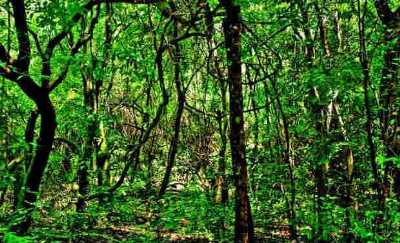
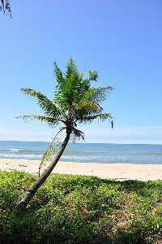

Kasarcode
Kareem's Forest Park
A paradise for nature lovers, scientists, biologists, environmentalist and students of Ayurveda, Kareem's Forest Park is believed to be the country's leading private sanctuary. Situated about 23 kms from Kanhagad Town, this place is packed with plethora of medicinal plants, flora and fauna. In fact it is like melting pot where different species of animals, insects, reptiles, birds, wild animals, micro-organisms and amphibians inhabits.
Valiyaparamba
There could not be better place to relax than the beautiful and serene backwater stretches of Kerala, God's own country. And Valiyaparamba is believed to be one of the most gorgeous backwaters located in the proximity to Bekal town. Now serving as a backwater resort, it is a perfect place for swimming and fishing.
Nileshwar

Nileshwaram, also known by the name of Nileshwar, is a major town that is located in the Kasaragod District of Kerala in southern India. Nileshwaram is one of the three municipalities that can be found in the district, the others being Kasaragod and Kanhangad. Nileshwaram is also referred to as the cultural capital of the Kasargod District and lies nestled between two rivers, the Nileshwaram Puzha and Thejaswini Puzha. With the Arabian Sea to its west, the town is breathtakingly beautiful and a spectacular site to be at.
Cheruvathur

Cheruvathur is a cosy small town in the Kasaragod district of Kerala, located only 10 kilometres south of the major town of Nileshwaram. The place is known for being the birthplace of great 19th-century poet Mahakavi Kuttamath of Kerala. His work on musical drama and poem compilations is an excellent source of literary inspiration in Cheruvathur. Keeping that in mind, authorities changed the name of the town to Kuttamath Nagar on paper. However, most people still call the town Cheruvathur only.